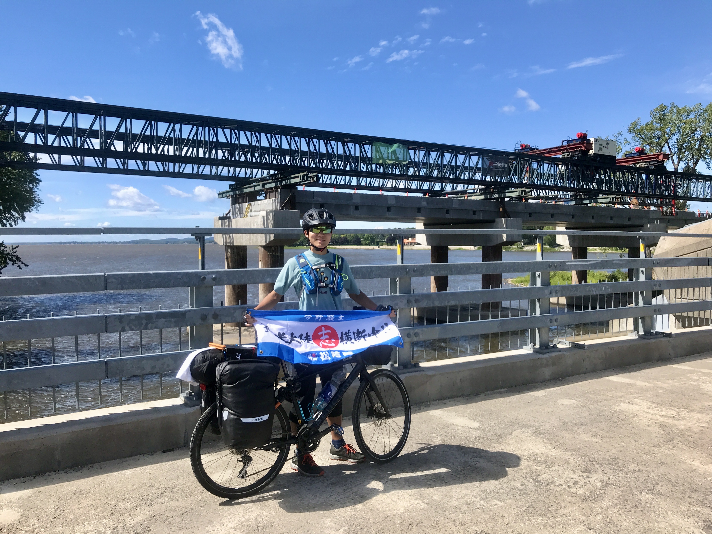

千葉県生まれ、長野県育ち。幼いころから長野の大自然を自転車で走り回る。 小学3年生のとき、長野県から千葉県まで約300kmを自転車で旅したことで冒険に目覚めた。 高校生から北米大陸横断プロジェクトを開始し、これまでに計1万km以上を走破。 現在は東京工科大学大学院でAI・メディアサイエンスを研究しながら、 プログラミング・ロボティクスの講師、Web制作、AI活用など、さまざまなことに挑戦中。
小学生から現在まで、冒険と学びの軌跡。